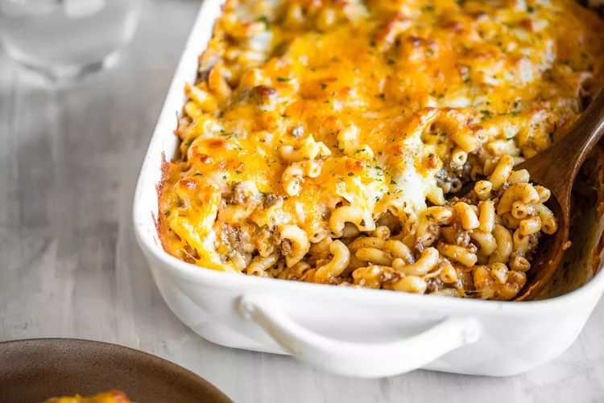
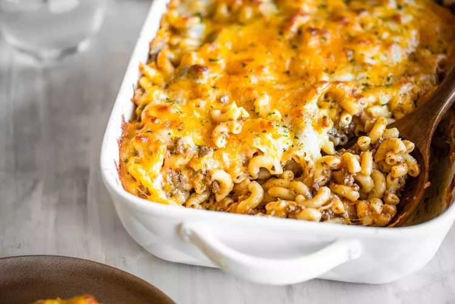

.png) 

CheeseBurger Casserole
Ingredients:
12 ounces (340g) dried elbow macaroni (about 6 cups dry pasta)
1 1/2 pounds ground beef (I like 80:20)
2 teaspoons oregano
1 teaspoon sea salt, plus more as needed for salting the pasta water
1 teaspoon black pepper
1 teaspoon chili powder
1 teaspoon ground cumin
2 teaspoons butter
1/2 cup chopped yellow onion
1 tablespoon minced garlic
1/4 cup tomato puree
1 1/2 cups heavy cream
1/4 cup chicken stock
1/2 teaspoon dried parsley
1/2 teaspoon dried basil
2 cups shredded Monterey Jack cheese, divided
2 cups shredded cheddar cheese, divided
Instructions:
-
- Boil the pasta:
- Put a large pot of salted water on to boil (1 tablespoon salt for every 2 quarts of water). - Once the water has reached a rolling boil, add the dry pasta, and cook, uncovered, stirring occasionally, about 9 to 11 minutes, until mostly cooked through but still a bit firm to the bite.
- Using a colander, drain and set to the side.
- Cook the ground beef:
- As the pasta cooks, heat a large skillet over medium heat and add the ground beef.
- Season with oregano, sea salt, black pepper, chili powder, and ground cumin. Cook, stirring occasionally, until the beef is browned and no longer pink, about 5 minutes.
- Add the butter and aromatics:
- Add the butter, onions, garlic, and tomato puree to the skillet with the ground beef. Stir until all ingredients are combined.
- Combine the pasta and ground beef:
- Add the cooked pasta to the beef mixture and stir to combine. Add the heavy whipping cream, chicken stock, parsley, basil, 1 1/2 cups of the shredded Monterey Jack cheese, and 1 cup of the shredded cheddar cheese. Stir until combined.
- Add to a casserole dish:
- Transfer to a 9x13-inch casserole dish (no need to grease) and top with the remaining cheese.
- Bake:
- Bake the casserole for 15-20 minutes, until the cheese is browned and bubbly.
- Serve and store:
- For a looser casserole, serve right away. For a casserole that holds its shape a bit, let sit 10 minutes before serving.
- The casserole will keep, refrigerated in an airtight container, for 3-4 days.
- You can also freeze it by storing it in an airtight container for up to 3 months. To reheat, microwave or place in the oven at 350°F oven until it is heated through (this will depend on the portion size you are reheating).
...